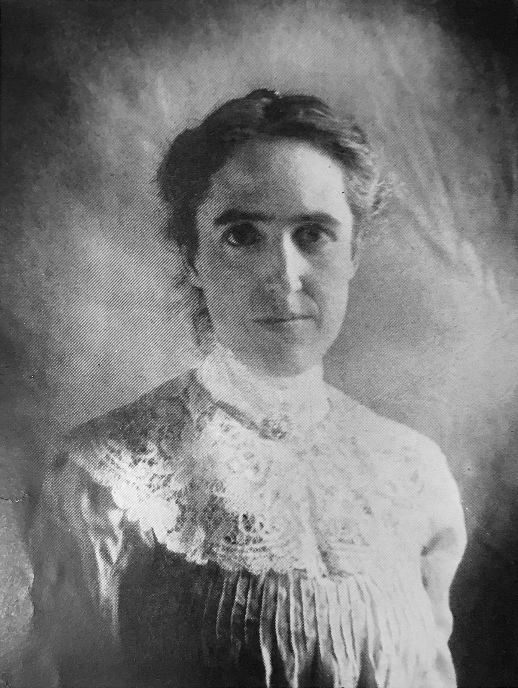
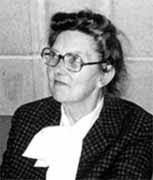

Ada Lovelace

Augusta Ada King, comtesse de Lovelace, née Byron, est souvent présentée comme la toute première programmeuse de l'histoire de l'informatique. Fille du poète Lord Byron, elle grandit sous l'autorité rigoureuse de sa mère qui, craignant qu'Ada n'héritât du tempérament fantaisiste de son père, lui imposa une éducation résolument tournée vers les mathématiques et la logique.
C'est lors de ses échanges avec le mathématicien
Charles Babbage
Plus visionnaire encore, Ada comprit que la machine ne se limitait pas aux calculs numériques : elle
entrevit la possibilité de composer de la musique, de manipuler des symboles, préfigurant ainsi l'idée
même d'un
ordinateur universel
Henrietta Swan Leavitt

Texte encore à compléter. A travaillé sur les méthodes de calcul systématique au sein des "calculatrices humaines".
Henrietta Swan Leavitt
Henrietta Swan Leavitt était une astronome américaine travaillant à l’observatoire de Harvard, où elle faisait partie des
calculatrices humaines
Elle étudia particulièrement les
étoiles Céphéides
Cette découverte devint un outil essentiel pour mesurer l’univers et fut utilisée par
Edwin Hubble
Grace Hopper
Texte à compléter. Grace Hopper a créé le tout premier compilateur

Kathleen Booth

Texte à compléter. A conçu des machines informatiques et inventé le langage assembleur.